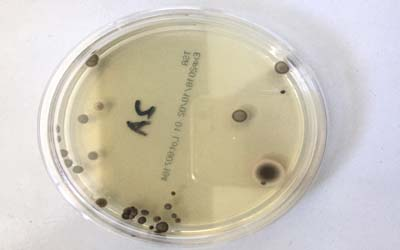
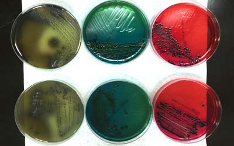

細菌病毒消毒常識

何謂微生物？是指肉眼看不到或看不清楚，須借助顯微鏡觀察之微小生物。一般微生物生長繁殖迅速且適應力強，包含了細菌、無細胞生物(如病毒、亞病毒因子)、真核微生物(如真菌、原蟲、藻類)三大類， |
| （一）真菌(Fungi)：常見之黴菌、蕈即是，在微生體中形體大者，有些真菌可用肉眼看到，如洋菇、香菇、靈芝等，它不行光合作用也沒有葉綠素，部份真菌要借助顯微鏡才能看的清楚，如感染植物之真菌，穀物中之黃麴菌(其毒素為致癌物)，人類香港腳、皮膚病之病原等也是真菌。黴菌是一種依賴活的或死亡之動植物維生的植物，會造成如香港腳等疾病,在一般家庭中，1立方米的室內空氣中也漂浮著成少則數百,多則上千或萬的黴菌孢子（青黴、黑黴、曲霉等)。 |
| （二）細菌（Bacteria）：細菌為原核生物，體形較真菌小，須用高倍顯微鏡才能看見，細菌的大小一般以(um)微米做為測量單位，如：傷寒、霍亂、結核、化膿、破傷風等之病原病。細菌是一種極微小的單細胞生物，有些細菌可以輕易地被消滅，但有些對化學性殺菌劑較具抵抗力。細菌可能造成膿腫、腹瀉及結核病等危害。 |

微生物種類
| （三）原蟲（Protozoa）：原蟲為單細胞真核微生物，沒有細胞壁(cell wall)如陰道滴虫就是常見的原蟲之一，它可藉由纖毛或鞭毛通過運動，經特殊染色法其鞭毛著色才能觀察到。 |
| （四）藻類（Algae）：為真核細胞，含有葉綠素，會行光合作用，其細胞壁堅固，其大小不一，小的要顯微鏡才看得到，大的如綠藻及海帶均是。 |
| （五）病毒（Viruse）：體形最小，必須用電子顯微鏡才能看見(如SARS病毒其大小為80-50nm之間)，如A、B型肝炎、流行性感冒、禽流感、登革熱等都是病毒，病毒實際上是一種寄生物，它只能選擇性地在特定的寄主內生產與繁衍，所以它是介於有生命與無生命的地帶，大部分病毒較容易被消毒藥劑殺死，例如HIV病毒（即人體免疫不全病毒，是造成愛滋病的元兇）；而像B型肝炎病毒等，對化學性殺菌劑較具抵抗力，一般我們對病毒的了解是100%的害處，事實不然，在美國曾發現某種綠藻受太陽紫外線破壞其細胞，而不能行光合作用死亡，但感染某特殊病毒，其細胞又會死而復活，地球上的病毒多到我們所想像的，因此對病毒的了解還是相當有限的。 |
細菌病毒構造種類
| 莢膜(capsule)：某些細菌在細胞壁外如同膠囊的膜，當細菌失去此膜，其致病力也會降低或消失。 |
| 鞭毛(flagellum)：是某些細菌其菌体上附著的細長彎曲絲狀物，是細菌活動的器官，具有鞭毛的細菌大多是螺形菌和桿菌為主，鞭毛由蛋白所組成，有抗原性。 |
| 菌毛(Pilus or fimbriae)：其菌体表面比鞭毛更細、短、直、多之絲狀物，革蘭陽性菌居多。 |
| 芽孢(內生孢子)：是某些特殊種群的細菌產生的特殊休眠體，具有極強的抵抗熱、酸、鹼、幅射、高滲能力，具有繁殖與傳播能力及休眠作用之生物組織，如植物、藻類、真菌和一些原生動物，孢子皆擔當衍生下一代之角色，其中黴菌孢子具有強抗旱與抗紫外線能力是不易處理，因此細菌消毒必需使用適當方法才可事半功倍。 |
| 病毒：由一個核酸分子（DNA OR RNA）與蛋白質所架構之形態，為類生物，無生命現象，而是用宿主細胞內的代謝工具來合成自身的複製，寄生生活。 |
| 微生物增殖要素：營養、水分、氧氣、溫度...等。 |